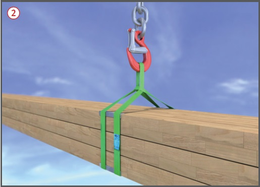
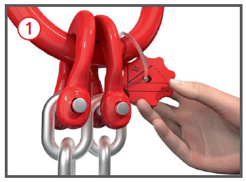
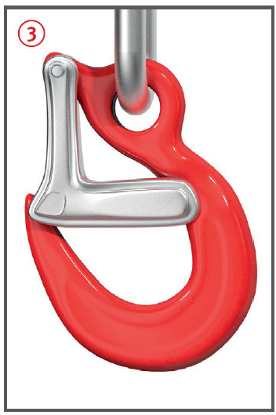
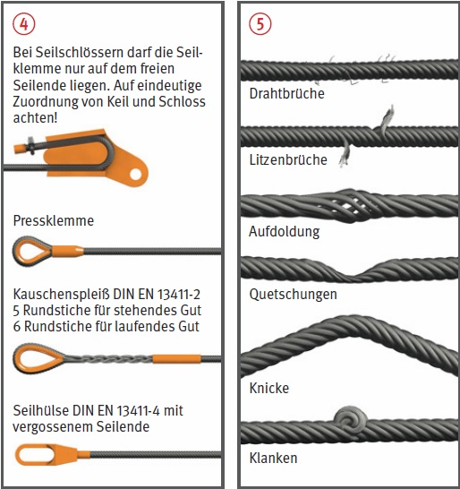

.
.
Anschlagen von Lasten
|


. anschlagen.
Das Anschlagen im
Hängegang ist nur bei großstückigen Lasten zulässig, wenn
ein Zusammenrutschen der Anschlagmittel
und eine Verlagerung
der Last nicht möglich ist.
anschlagen.
Das Anschlagen im
Hängegang ist nur bei großstückigen Lasten zulässig, wenn
ein Zusammenrutschen der Anschlagmittel
und eine Verlagerung
der Last nicht möglich ist. verwenden. Aufgezogene
Haken sofort aussortieren.
verwenden. Aufgezogene
Haken sofort aussortieren.
 .
.
 , Tabelle 1.
, Tabelle 1.| 1 Ablegereife von Drahtseilen bei sichtbaren Drahtbrüchen | |||
| Seilart | Anzahl sichtbarer Drahtbrüche bei Ablegereife auf einer Länge von | ||
| 3d | 6d | 30d | |
| Litzenseil | 3 benachbarte Drähte einer Litze | 6 | 14 |
| Kabelschlagseil | 10 | 15 | 40 |
07/2021